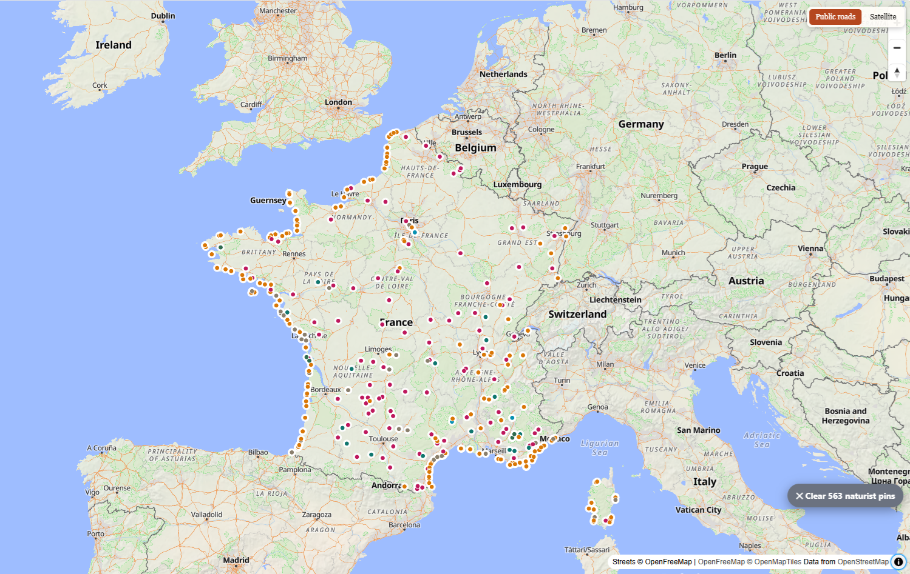
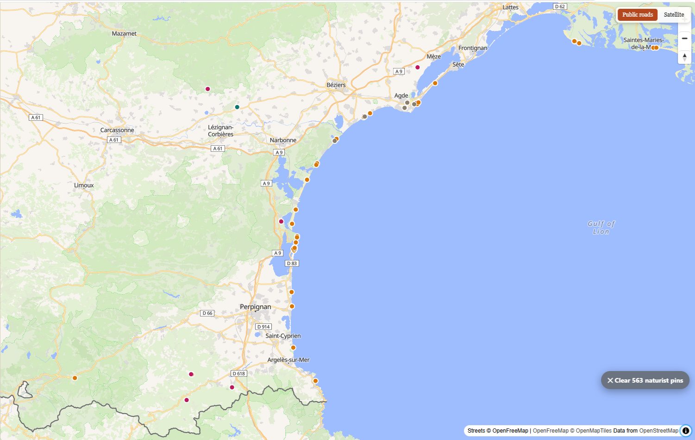

BeachScout · Country guide
563 naturist beaches, campsites, resorts and swimming places are mapped in France — more than any other country in Europe. Here is where they are, and what the different kinds actually mean.

Open the live map Get the Android app
That number surprises people, and it is worth explaining rather than hiding. France has the longest-established naturist culture in Europe and by far the most naturist infrastructure — yet only 21 of its beaches carry the OpenStreetMap tag marking them as formally designated.
This is a gap in the map data, not in French law. Volunteers map what they can verify from a sign or a published rule, and most French naturist beaches have simply never had that confirmed by whoever added them. The 333 in the plain "naturist beach" group include many that are, in practice, entirely official.
It matters because the distinction is real elsewhere. On a beach recorded as designated, you are within your rights. On one where naturism is customary or merely tolerated, enforcement varies and can change from season to season. BeachScout keeps the two apart rather than flattening them into one reassuring label — and the 54 places identified as naturist by name alone, with no tag at all, are flagged separately again, because the name is the only evidence there is.

This is where France's naturist coast is at its most concentrated — beaches, campsites and purpose-built resorts within a few kilometres of each other, backed by the lagoons between Sète and Agde. Zoom in on the live map and each dot becomes a named place with sea temperature, wind, waves and a walking route from the nearest public parking.
France is the largest single set, but nothing here is specific to it. Pick any country in BeachScout and tap Naturist places in this country to get the same view — every mapped location, grouped the same way, with the official and customary distinction intact.
It is most rewarding around the Mediterranean, where naturist beaches cluster thickly: Croatia's Istrian and Dalmatian coasts, Spain from the Costa Brava to Andalusia, the Greek islands, and the Italian coast and Sardinia. Germany is worth a look too — the FKK tradition means a density inland, around lakes, that no Mediterranean country matches.
Coverage varies, and it reflects how thoroughly volunteers have mapped a place rather than how many naturist beaches exist there. Somewhere with few entries is more likely under-mapped than empty.
Tap any beach and BeachScout gives you sea and air temperature, wind, waves, UV and rain chance, with a plain verdict on whether today is worth the drive. It finds the nearest public parking and a walking route from it, lists accommodation within 3 km, and transliterates local place names into Latin script so you can match them to a road sign. Visitors can add their own photos and descriptions, and there is a separate view for dog-friendly beaches.
It is free, needs no account, and there is nothing to buy.